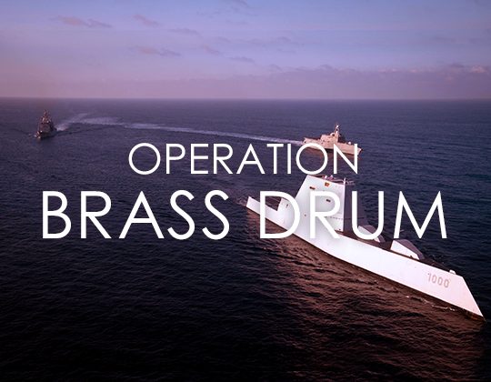

Original Concept By: Christopher Stoner
Date: August 4th 2017
Location: Strait of Hormuz
Playable Side: United States
Duration: 1 Day
Following the July 2017 attack on Gaza, the Islamic Republic of Iran demanded a UN censure of Israel as the 'unprovoked aggressor' in that crisis. Although the measure was enthusiastically supported by several member nations the proposal was swiftly quashed by the US UN Ambassador with a Security Council veto. Frustrated on the international stage, the Iranian President declared a blockade on the Strait of Hormuz until such time as the United States 'allowed the world to speak'.
While only a few years before such an action would have been foolhardy, it would be unwise to discount Iran's ability to make good on its' threat today. In recent years the Americans' international prestige has suffered. In particular, progressively worsening relations with Russia have led to a state of brusque intolerance between the two nations. China has also been at odds with the US over their expansionism in East Asia and trade inequities. Both have worked to increase their influence with Iran, in particular by providing them a new generation of 'defensive armaments', despite the protests of a weakened United States.
The American President is not deterred from standing against the Iranian ultimatum. With only 1 carrier and an amphibious ready group in the region, with little else to support them, he orders a Freedom of Navigation operation through the Straits of Hormuz and authorizes pre-emptive action to guarantee its' success. It's a bold move that will demand the most from the limited forces available to the US Navy, where success will bolster the flagging prestige of the United States and failure means a massive loss of its' influence in the Middle East.